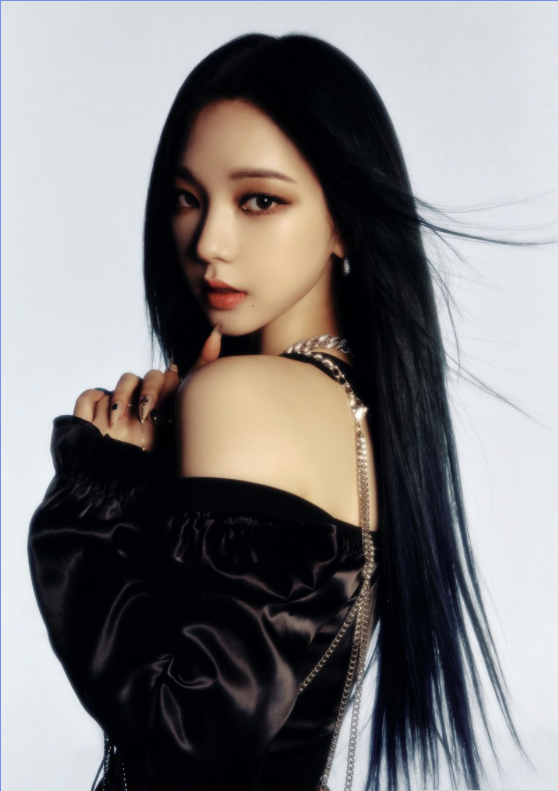

SM엔터테인먼트 소속 4인조 걸그룹 aespa의 리더 
aespa에서 리더를 맡고 있다. 인터뷰 때마다 멤버들을 살피거나, 뒤에 있는 멤버를 앞으로 나올 수 있게 챙겨주고 부딪히려는 스태프를 챙겨주는 등 리더다운 모습을 자주 보인다. 상대적으로 구분되는 포지션은 메인댄서이다.
안무의 정석 그대로를 잘 살리고 강약 조절도 좋은 편이라 춤을 느낌 있게 춘다. 디테일이 좋고 선이 고우며 빠른 비트에도 버리는 동작 하나 없이 힘이 손 끝까지 전달되기 때문에 유연성, 파워, 리듬감, 표정 연기, 그루브가 좋은 편이다.
상체를 잘 사용하고 동작이 물 흘러가듯 자연스러워 춤선이 중성적이라는 평이 다수. 이를 가장 잘 보여주는 예가 아는 형님에서 춘 댄스 영상. 또한, 주간 아이돌에서 춘 SM 노래 메들리에서도 유연성이 돋보인다.
데뷔 전, 고등학교 시절 댄스 동아리 발표에서 췄던 영상과 비교하면 많은 노력과 연습으로 성장한 것을 알 수 있다.